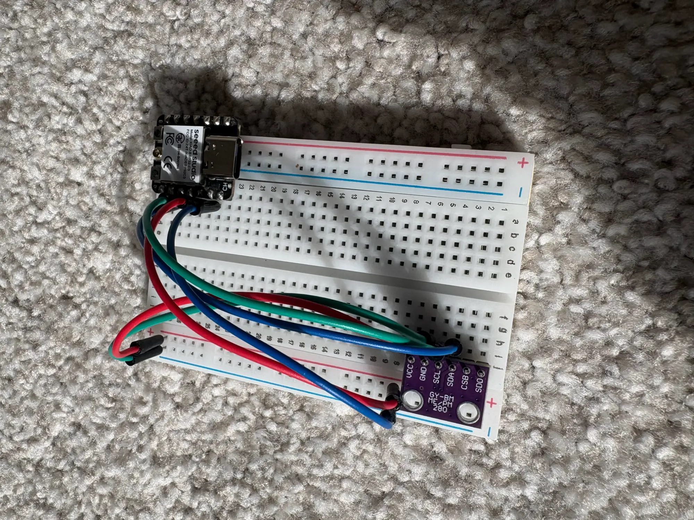

Inside the prototype.
This is a 3D model of the full PATHOS rig. Keep scrolling to follow one signal from a fingertip to the dashboard.
Scroll to unfold the prototype
A student hardware project · Bentonville, Arkansas
PATHOS combines skin conductance, heart rhythm, skin temperature and motion, because any one of them on its own is easy to misread. We're building it with families from Autism Involves Me and mentors from the Alice Walton School of Medicine.
It's a wellness and research tool. It is not a medical device and it doesn't diagnose anything.

| What changes | It might be stress. Or … |
|---|---|
| Heart rate goes up | coffee, or you just took the stairs |
| Skin gets sweaty | a warm room, or exercise |
| Fingers get colder | the air conditioning |
| You're moving a lot | walking to class |
No single number settles it. But if skin conductance climbs, heart rhythm shifts and skin temperature drops while you're sitting still, that's a much stronger sign that something is going on.
PATHOS is built around that cross-check. It reads five signals at once and only flags a change when they agree.
All five sit on the same I2C bus (SDA on GPIO 8, SCL on GPIO 9), each at its own address. Only the environmental sensor is in the current build. The rest arrive with MVP 2.
| Signal | Part | Why we measure it | Status |
|---|---|---|---|
| Skin conductance (EDA) | GSR module → ADS1115 | Sweat glands react quickly under stress, sometimes before you notice it yourself. Often treated as the most direct wearable stress signal. | MVP 2 |
| Heart rate & HRV | MAX30102 | Not just how fast the heart beats, but how much the gap between beats varies. That variation tracks nervous-system activity. | MVP 2 |
| Skin temperature | TMP117 | Blood vessels in the hands and fingers tighten under stress, so the skin cools slightly. | MVP 2 |
| Motion | MPU6050 | Tells us whether you're walking or sitting, so ordinary movement isn't mistaken for stress. | MVP 2 |
| Environment | BME280 | Room temperature, humidity and air pressure. Context that keeps a hot room from looking like a sweaty palm. | Working |
The ESP32-S3 reads each sensor and timestamps every sample.
Short windows of data are turned into features: levels, slopes and how much each signal varies.
A scikit-learn voting ensemble, saved with joblib, runs locally. No internet connection needed.
Baseline, elevated or high, shown next to the model's confidence so you can judge it yourself.
The pipeline is being aligned to WESAD, a public dataset of wearable recordings from people put through a controlled stress test in a lab. It's the standard reference for this kind of work.
Our first model, a small PyTorch network (3→64→64→1), scored R² = 0.9977. It was trained and tested on a dataset we generated ourselves, so the score said nothing about real bodies. We dropped it and moved to WESAD.
temp,hum,presThis is a 3D model of the full PATHOS rig. Keep scrolling to follow one signal from a fingertip to the dashboard.
Scroll to unfold the prototype
The ESP32-S3 rises first. Individual sensor modules follow, while their flexible connections stay attached.
A representative prototype · not manufacturer CAD
The ESP32-S3 coordinates acquisition, timestamps samples, manages storage, and transmits data wirelessly.
Acquisition → coordination → storage → transmission
TMP117 → ADS1115 → MPU6050 → MAX30102 → BME280. Each peripheral has its own address on the shared I2C bus.
SDA: GPIO8 · SCL: GPIO9 · ADS1115: 0x49
Finger electrodes feed the GSR module. Its analog output goes to ADS1115 A0, then reaches the ESP32-S3 over I2C.
Electrodes → GSR → ADS1115 A0 → I2C → ESP32-S3
The separate microSD breakout and inserted card provide a local recording path. Storage uses dedicated SPI, separate from the I2C sensor bus.
CLK 12 · MISO 13 · MOSI 11 · CS 10
The ESP32-S3 sends data to the laptop over Wi-Fi. The power bank supplies USB power to the controller; there is no physical laptop data cable.
Wireless visualization · illustrative data transfer
EDA, skin temperature, PPG, motion, and environmental waveforms bring different perspectives into one view.
Simulated signals · no live measurements or inference
Human sensors → sensor modules → ESP32-S3 → Wi-Fi → laptop → signal processing → V4 model → PATHOS dashboard.
Illustrated architecture. This demo does not run a V4 model or validate medical capabilities.
Use Explore to orbit the model and pick out parts, or carry on to the first real build below.
Representative geometry · assumed 3.3 V-compatible breakouts
See the real build ↓An ESP32-S3 and a BME280 streaming over serial into a Streamlit dashboard that runs the model on the laptop. It only measures the room, not the body, but it proved the pipeline end to end. This is the version we took to AIM events and showed on 5NEWS.
Click a photo to see it full size.
The next version moves to a custom board with the body sensors built in. There are no photos yet. We'll post real ones when the hardware exists, not renders.
An ESP32-C3, a thermometer and a question: can you see stress building from the body's own signals?
Under $25 in parts. Shown to families through AIM, covered by 5NEWS, and shared by @autism_feed.
Room sensors alone can't measure stress. We started working with mentors at the Alice Walton School of Medicine and moved the model over to WESAD.
Integrating EDA, pulse and skin temperature, and planning a proper validation study.
a wellness tool, informed by research, processed locally, and upfront about its limits.
a medical device, a substitute for care, or finished.
We teach the pieces PATHOS is made of, for students, caregivers and teachers.
What the body actually does under stress, and how to read it.
Wire a sensor, write Arduino code, and learn why 3.3 V vs 5 V logic matters on I2C.
How a classifier works, what confidence means, and when not to trust one.
Breadboard, ESP32, thermometer. Real wiring, real data.
What the readings mean, how to respond calmly, and the difference between wellness and diagnosis.
Founder, CEO & Chairman
Leads the project: the ML pipeline and WESAD work, component choice and I2C wiring, and the medical and ethics framing.
Chief Marketing Officer
Brand, community outreach, partnerships, media, and the workshop program.
Chief Technology Officer
Hardware architecture, sensor integration, firmware, and the enclosure design.
Medical mentors: Mary Buschlen and Josiah Leong, Alice Walton School of Medicine. Community partner: Paula George, founder of Autism Involves Me.
If you're a caregiver, researcher, teacher or someone who builds things and you'd like to help, try PATHOS or just ask a question, write to us.
This opens your email app with the message filled in.